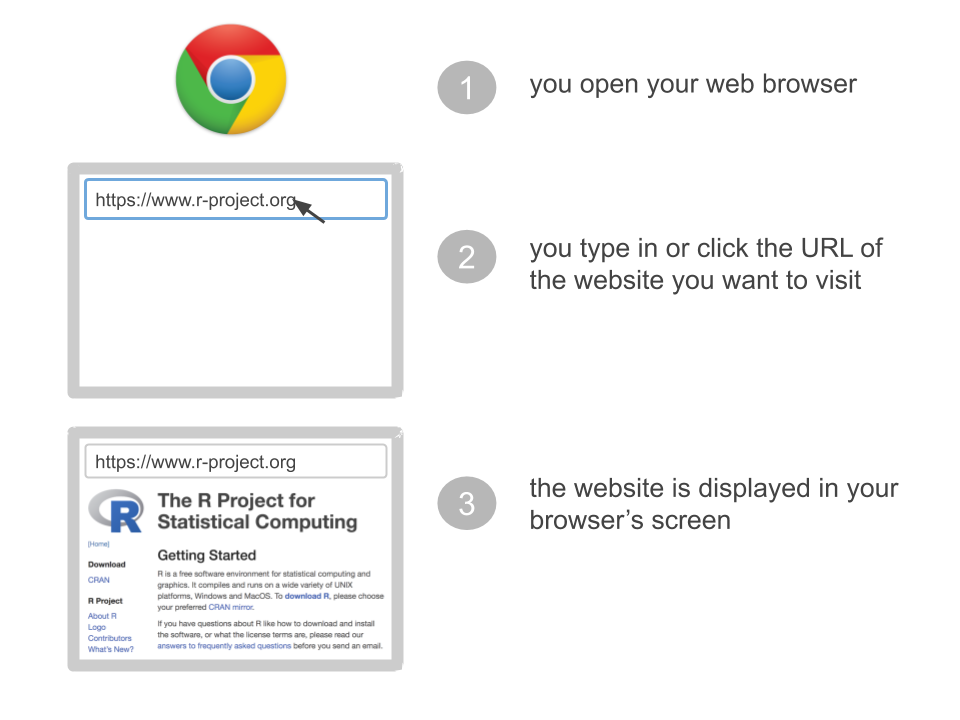
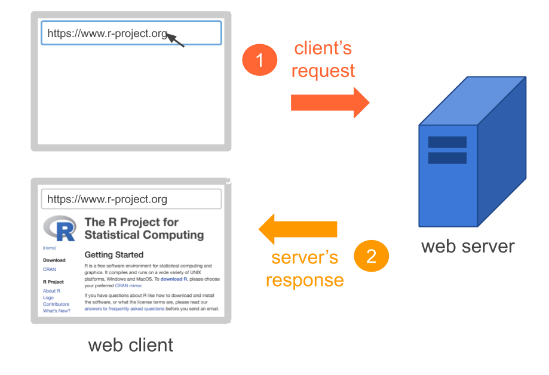
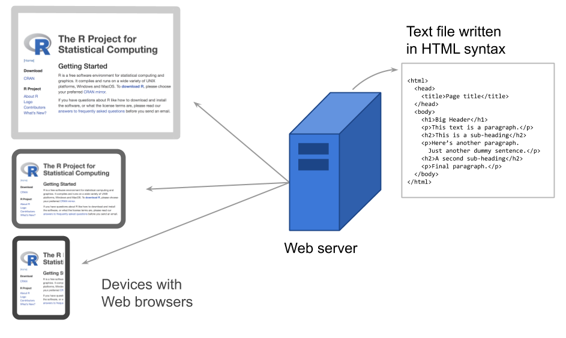
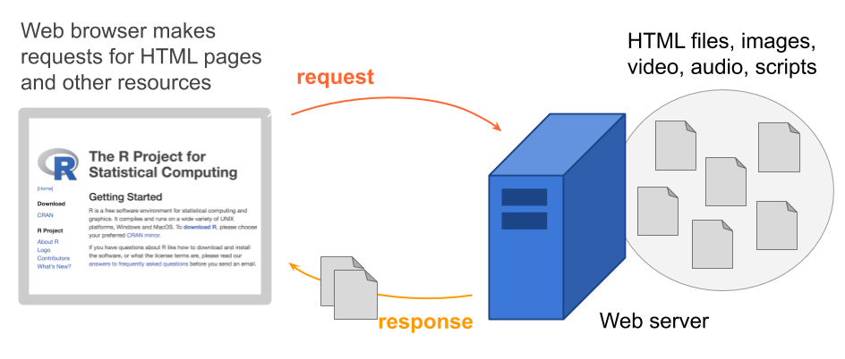

2 The Web
In this chapter I provide a brief and superficial description of the Web and how it works.
2.1 Surfing the Web
Think about when you surf the web:
You open a web browser (e.g. Google Chrome, Safari, Firefox)
You type in or click the URL of a website you wish to visit (e.g. https://www.r-project.org)
You wait some fractions of a second, and then the website shows up in your screen.
What exactly is happening “behind the scenes”?
People access websites using software called a Web browser (e.g. Google Chrome, Safari, Firefox)
A browser is a software that, among other things, requests information (e.g. request to access R project’s website)
Using more proper language, the browser in your computer is the client that requests a variety of resources (e.g. pages, images, videos, audio, scripts)
The client’s request is sent to Web servers
A server is the software-computer in charge of serving the resources that the clients request.
The server sends responses back to the client

To be more accurate, the server is the software that allows the computer to communicate with other computers; however, it is common to use the term “server” to refer to the computer running the software, which also contains other files and programs. Simply put, a server is basically a computer connected to the Internet. The Internet, in turn, is just a network of connected computers forming a system of standards and rules. The purpose of connecting computers together is to share information.
The job of the server software is to wait for a request for information, then retrieve and send that information back to the client(s) as fast as possible. In other words, Web servers have a full time job, waiting for requests from Web browsers all over the world.
2.2 How Does the Web Work?
Now that we have the high level intuition of clients making requests, and servers sending responses back to clients, let’s describe things in more detail.
To make web pages, programmers, developers and designers create files written in a special type of syntax called HyperText Markup Language or HTML for short. These files are stored in a Web server.

To be more precise, Web servers store more than one single HTML file. In practice, websites are made of several directories containing various types of files (image files, audio files, video files, scripts, etc).

Once HTML files are put on the web server, any browser (e.g. Chrome, Safari, Firefox, Explorer) can retrieve the web page over the internet. The browser on your laptop, on your tablet, on your cellphone, you name it. As long as the device you are using is connected to the internet, the browser will retrieve the web page. The HTML content in the web page tells the browser everything it needs to know to display the page.

On a side note, it’s important to distinguish the Internet from the Web. The Web, originally called the World Wide Web, is just one option to share information over the Internet. What characterizes the Web is that it allows documents to be linked to one another using hypertext links or hyperlinks, thus forming a web of interconnected resources.
In Summary
The Web is a massive distributed information system connecting software and computers to share information.
The software and computers that form the Web are divided into two types: clients and servers.
The way clients and servers dialogue between each other is by following formal protocols of communication.
The main type of protocol that clients and servers use is the HyperText Transfer Protocol (HTTP).
But there are other ways in which computers can exchange information such as email, file transfer (FTP), and many others.